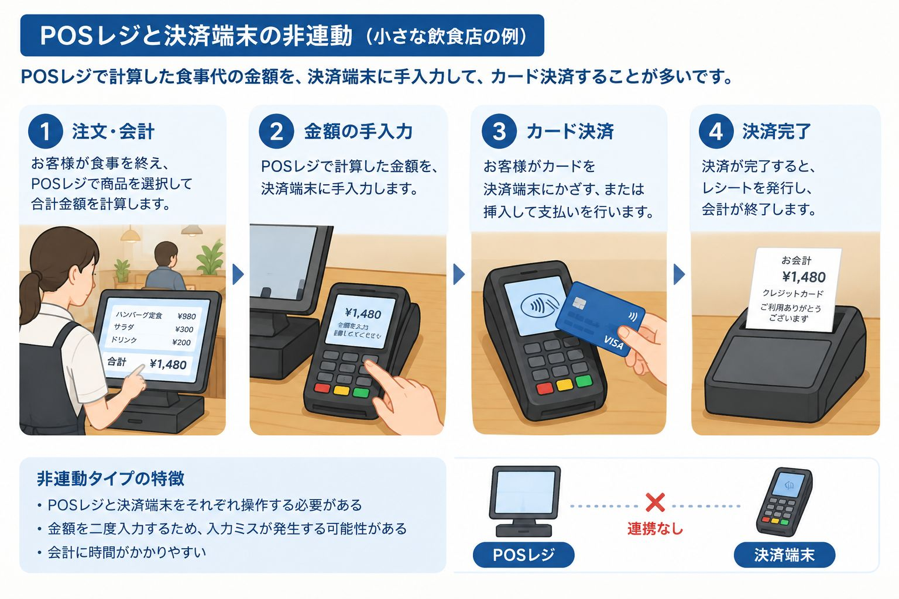
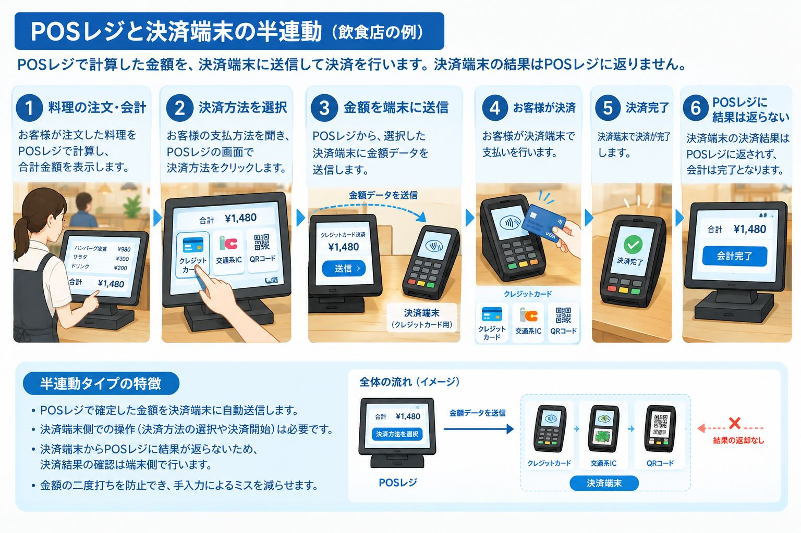
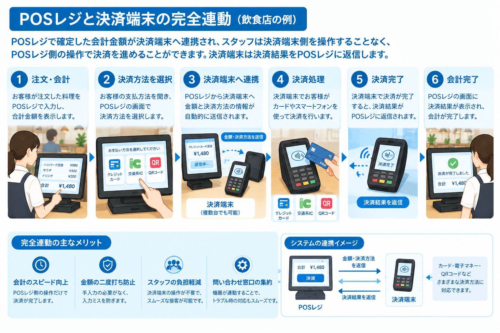

この記事でわかること
- POSレジと決済端末の役割の違い
- 「非連動」「半連動」「完全連動」の3つの連動方式の違い
- 食堂オートレジに必要な料理の価格認識（RFID・AI画像認識）の仕組み
- 外部決済端末に依存しない一体型食堂オートレジの特徴とメリット
会計の仕組みを理解するうえで、POSレジと決済端末の役割、そして両者がどのように連動するかは重要なポイントです。特に社員食堂や学生食堂では、バーコードのない料理の価格をどう認識するかという課題も加わります。本記事では、POSレジと決済端末の関係から、食堂オートレジの進化までを分かりやすく解説します。
1. POSレジの役割とは？
要点：POSレジは「いつ・何を・いくつ・いくらで販売したか」という販売データを記録・集計するレジシステムです。売上集計や販売状況の分析、在庫管理などに活用できます。
POSレジとは、商品の販売時に「いつ・何を・いくつ・いくらで販売したか」という情報を記録・集計するPOS（Point of Sale：販売時点情報管理）機能を備えたレジシステムです。
商品の販売データを自動的に記録することで、売上集計や販売状況の分析、在庫管理などに活用できます。
スーパーマーケットやコンビニエンスストアでは、商品のバーコードを読み取ることで商品情報と価格を取得し、会計金額を計算する仕組みが一般的です。
2. 決済端末の役割とは？
要点：決済端末は、クレジットカード・電子マネー・QRコードなどを使ってキャッシュレス決済を行う機器です。POSレジが「何を、いくらで販売したか」を管理するのに対し、決済端末は「どの決済方法で、いくら支払うか」を担います。
決済端末は、クレジットカード、電子マネー、QRコード決済などを利用して、キャッシュレス決済を行うための機器です。
POSレジが「何を、いくらで販売したか」を管理するのに対し、決済端末は「どの決済方法で、いくら支払うか」という決済処理を担います。
つまり、POSレジと決済端末は、それぞれ異なる役割を持ちながら、連携することでスムーズな会計を実現します。
3. POSレジと決済端末の3つの連動方式
要点：POSレジと決済端末の連動方式は、一般的に「非連動」「半連動」「完全連動」の3種類に分けられます。連動の度合いが高いほど、金額の二度打ちを防ぎ、会計操作を簡素化できます。
POSレジと決済端末の連動方式は、一般的に「非連動」「半連動」「完全連動」の3種類に分けられます。
① 非連動タイプ：それぞれの機器で金額を入力
POSレジと決済端末が連携していない方式です。
POSレジで会計金額を確定したあと、スタッフが同じ金額を決済端末にも入力して決済を行います。

特徴
- POSレジと決済端末をそれぞれ操作する必要がある
- 金額を二度入力するため、入力ミスが発生する可能性がある
- 会計に時間がかかりやすい
② 半連動タイプ：金額データを連携し、決済端末で操作
POSレジで確定した会計金額を決済端末に自動送信する方式です。
金額を再入力する必要はありませんが、決済端末側で決済方法の選択や決済開始などの操作が必要になる場合があります。

特徴
- 金額の二度打ちを防止できる
- 手入力による金額間違いを減らせる
- 決済端末の決済結果を手動でPOSレジに完了とする操作が必要です。
③ 完全連動タイプ：POSレジの操作を起点に決済
POSレジで決済処理を開始すると、会計金額などの情報が決済端末に連携され、決済処理が進む方式です。
決済端末側で金額を入力する必要がなく、対応するシステムではPOSレジ側の操作を中心に会計を進められます。

特徴
- 会計操作を簡素化できる
- 金額の二度打ちを防止できる
- 会計時間の短縮やスタッフの負担軽減につながる
ただし、完全連動であっても、利用者によるカードのタッチや暗証番号の入力など、決済方法に応じた操作が必要になる場合があります。
3つの連動方式の比較
| 比較項目 | 非連動 | 半連動 | 完全連動 |
|---|---|---|---|
| 金額の自動連携 | なし | あり | あり |
| 決済端末への金額入力 | 必要 | 不要 | 不要 |
| 決済端末側の操作 | 必要 | 必要な場合あり | 原則としてPOS側の操作を中心に進行 |
| 金額の二度打ち | 発生する | 防止できる | 防止できる |
| 会計操作の簡素化 | 限定的 | 一定の効果 | より高い効果が期待できる |
※実際の操作方法や連動範囲は、製品や決済方式によって異なります。
4. 食堂のオートレジには、料理の価格を認識する仕組みが必要
要点：社員食堂や学生食堂では料理や食器にバーコードがないため、料理の価格を自動的に認識する仕組みが必要です。代表的な方法として、RFID認識方式とAI画像認識方式があります。
社員食堂や学生食堂では、スーパーマーケットの商品とは異なり、料理や食器にバーコードが付いていないことが一般的です。
そのため、一般的なPOSレジをそのまま利用すると、料理ごとの価格を手入力したり、別の方法で商品情報を登録したりする必要があります。
特に、利用者が多い食堂では、料理の価格を自動的に認識し、迅速に会計できる仕組みが重要です。
代表的な方法として、RFID認識方式とAI画像認識方式があります。
RFIDレジ：食器のRFIDタグで料理を識別
RFID方式では、食器などにRFIDタグを取り付け、読み取り機でタグ情報を読み取ります。
あらかじめ登録されたタグと料理の情報を対応させることで、料理の価格を取得し、会計金額を計算します。
- 食器に取り付けたRFIDタグを読み取る
- タグ情報から料理を識別する
- 登録された価格を取得し、合計金額を計算する
AI認識レジ：カメラ画像から料理を識別
AI画像認識方式では、カメラで撮影した料理や食器の画像をAIが解析し、料理の種類を識別します。
識別結果をあらかじめ登録された商品情報や価格と照合することで、会計金額を自動計算します。
- カメラで料理や食器を撮影する
- AIが画像から料理を識別する
- 登録された価格を取得し、合計金額を計算する
この方式では、RFIDタグを食器ごとに取り付ける代わりに、画像認識によって料理を識別できます。ただし、認識精度は料理の見た目や盛り付け、照明条件などに左右されるため、導入環境に応じた検証が重要です。
5. 食堂オートレジにおけるPOS機能と決済機能
要点：食堂オートレジには、料理を認識して価格を計算する機能と、利用者の支払いを処理する機能の両方が必要です。多くのシステムでは、POS機能を担う装置と外部の決済端末を完全連動させる構成が採用されています。
食堂オートレジを実現するには、料理を認識して価格を計算する機能と、利用者の支払いを処理する機能の両方が必要です。
一般的な構成では、次のような流れになります。
- RFIDまたはAI画像認識によって料理を識別する
- 登録された価格から合計金額を計算する
- POS機能で会計情報を管理する
- 決済端末と連動して支払いを処理する
- 決済結果を確認し、会計を完了する
多くのシステムでは、POS機能を担う装置と外部の決済端末を組み合わせ、両者を完全連動させる構成が採用されています。
この方式では、料理の認識から会計金額の計算、決済処理までを効率化できます。一方で、外部の決済端末を利用する場合、機器間の接続や対応する決済方式、保守・サポート体制なども検討する必要があります。
6. 外部の決済端末に依存しない食堂オートレジ
要点：出雲創安（IZUMO SOAN）の食堂オートレジは、料理の価格認識と会計処理に加え、顔認証・QRコード・カードによる支払い機能を提供します。外部決済端末を別途接続する構成に依存せず、食堂の運用に合わせた会計システムを構築できます。
出雲創安（IZUMO SOAN）が提案する食堂オートレジは、POSレジと決済端末を一体化した製品です。

出雲創安（IZUMO SOAN）が提案する食堂オートレジは、料理の価格認識と会計処理に加え、顔認証・QRコード・カードによる支払い機能を提供するシステムです。
外部の決済端末を別途接続する構成に依存せず、食堂の運用に合わせた会計システムを構築できる点が特徴です。
期待できるメリット
1. システム構成の簡素化
料理の認識から会計、支払いまでを一体的に設計することで、外部機器との接続に伴う構成の複雑さを抑えられます。
2. 省スペース化
独立した決済端末を追加する構成と比較して、機器の設置スペースを削減できる可能性があります。
3. 保守・運用の効率化
システム全体を一体的に設計することで、機器間の問題を切り分ける負担を軽減し、運用や保守を効率化しやすくなります。
4. 食堂に適した支払い方法
顔認証・QRコード・カードなど、食堂の運用方針や利用者のニーズに合わせた支払い方法を検討できます。
※利用できる決済方式、外部サービスとの接続要件、決済処理の構成は、導入する製品・サービスの仕様によって異なります。
7. 食堂運営における決済手数料という課題
要点：社員食堂や学生食堂の運営では「栄養」「健康」「価格」が重要なキーワードです。見落とされがちなキャッシュレス決済の手数料は、積み重なると利益を圧迫する可能性があるため、トータルコストでの比較が重要です。
社員食堂や学生食堂の運営では、料理の品質だけでなく、「栄養」「健康」「価格」の3つが重要なキーワードになります。
利用者に栄養バランスのよい食事を手頃な価格で提供するためには、食材費や人件費だけでなく、日々発生する運営コストにも目を向ける必要があります。
その中で、見落とされがちなのがキャッシュレス決済の手数料です。
決済手数料は、食堂にとって無視できないコスト
一般的なキャッシュレス決済サービスでは、契約条件によって決済金額の約3％程度の手数料が発生する場合があります。
例えば、1回500円の食事を提供する食堂で、年間のキャッシュレス決済額が3,000万円だった場合、決済手数料が3％であれば、年間90万円の費用になります。
| 項目 | 金額 |
|---|---|
| 1食あたりの価格 | 500円 |
| 年間の決済取扱高 | 3,000万円 |
| 決済手数料率（仮定） | 3％ |
| 年間の決済手数料 | 90万円 |
※上記は仕組みを説明するための試算であり、実際の手数料率や取扱高を示すものではありません。
食堂の運営では、こうしたコストが積み重なることで、利益を圧迫する可能性があります。食事の価格を簡単に引き上げられない社員食堂や学生食堂では、特に慎重なコスト管理が求められます。
決済システムの選択が、食堂の価格とサービスを左右する
食堂のキャッシュレス化を進める際には、会計のスピードや利便性だけでなく、決済手数料を含むトータルコストも比較することが重要です。
出雲創安（IZUMO SOAN）の食堂オートレジは、顔認証・QRコード・カードによる支払い機能を備え、外部の決済端末に依存しないシステム構成を実現できます。
例えば、食堂内の利用者アカウントやプリペイド残高を利用する方式であれば、一般的なクレジットカード決済などとは異なるコスト構造を検討できます。
大切なのは、単に会計を自動化することではありません。システム導入による省力化と運用コストの適正化を通じて、利用者に栄養バランスのよい食事を、健康的で手頃な価格で提供できる環境を目指すことです。
8. まとめ：食堂オートレジは「料理の認識」と「決済」の両方が重要
要点：POSレジと決済端末を連動させることで会計処理を効率化できます。食堂では、バーコードのない料理をRFIDやAI画像認識で識別し、合計金額を自動計算するとともに、適切な決済機能を組み合わせることが重要です。
POSレジと決済端末は、それぞれ異なる役割を担っています。両者を連動させることで、金額の二度打ちを防ぎ、会計処理を効率化できます。
一方、社員食堂や学生食堂では、バーコードのない料理をどのように識別し、価格を自動計算するかという課題もあります。
RFIDやAI画像認識によって料理を識別し、会計金額を自動計算するとともに、適切な決済機能を組み合わせることが、食堂オートレジの重要なポイントです。
出雲創安（IZUMO SOAN）は、料理の価格認識から会計、顔認証・QRコード・カードによる支払いまでを考慮した食堂オートレジを通じて、社員食堂・学生食堂の会計業務の効率化を支援します。
料理の認識から支払いまで、食堂の会計をよりシンプルに。
製品の詳細は、食堂オートレジの製品紹介ページをご覧ください。
まずは無料POCで効果を実感しませんか？
AI画像認識・RFID・計量精算 — お客様の食堂に最適な方式を、実際の環境でテストいただけます。
機器の持ち込み・設置・回収まで当社が対応。費用は一切かかりません。